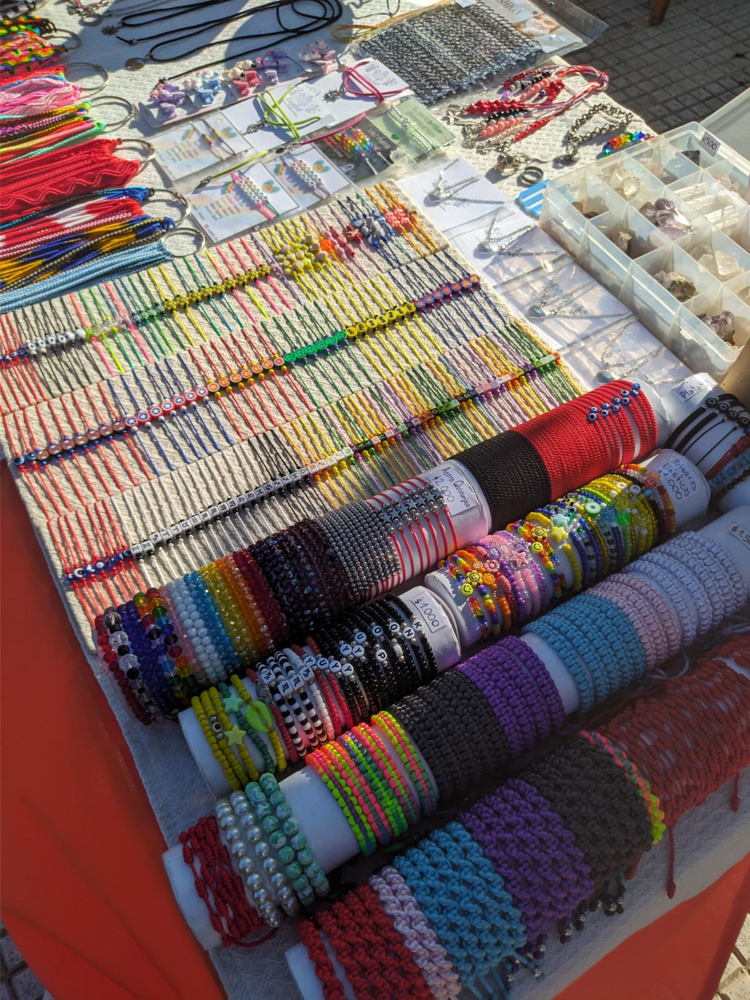

<div class="flex flex-col min-h-screen">
	<div class="flex-grow">

		<div *ngIf="isLargeScreen" class="mb-48 sm:mb-62">
			<app-navBar class="sticky top-0 z-50 Bg-MyBg"></app-navBar>
		</div>
		
		<app-nav-bar-responsive *ngIf="!isLargeScreen"></app-nav-bar-responsive>

        <div class="min-h-screen">
            <!-- Hero Section -->
            <div class="relative h-[60vh] md:h-[80vh] w-full mb-8">
              <div class="absolute inset-0">
                
                <div class="absolute inset-0 bg-black/50"></div>
              </div>
              <div class="relative h-full flex items-center justify-start px-6 md:px-12 lg:px-24">
                <div class="max-w-2xl">
                  <h1 class="text-4xl md:text-5xl lg:text-6xl julius text-white leading-tight font-bold">
                    Detras de<br />
                    
                  </h1>
                </div>
              </div>
            </div>
            <div class="bg-MyColor py-8 md:py-24 px-4 md:w-[700px] xl:w-[900px] rounded-lg mb-8 m-auto max-md:mx-4">
                <div class="container mx-auto px-6 md:px-12">
                    <div class="max-w-3xl mx-auto text-center">
                    <h2 class="text-3xl md:text-4xl julius text-primary mb-8">
                        SOBRE MI
                    </h2>
                    <p class="text-white leading-relaxed mb-8">
                        Hola, soy Lucía, la fundadora y creadora detrás de LucyBell.
                        Desde que tenía 16 años, he estado apasionada por crear accesorios artesanales 
                        que no solo sean hermosos, sino también de alta calidad y duraderos.
                    </p>
                    <p class="text-white leading-relaxed mb-8">
                        En LucyBell, ofrecemos una variedad de accesorios, 
                        desde pulseras y collares hasta aros y más. Cada pieza es 
                        cuidadosamente diseñada y creada a mano con dedicación y amor.
                    </p>
    
                    <p class="text-white leading-relaxed mb-8">
                        Me siento afortunada de haber podido compartir mi pasión con tantas 
                        personas a lo largo de los años. He tenido la oportunidad de participar 
                        en diferentes ferias y eventos, y en estos he conocido a muchos clientes 
                        que me motivan muchísimo.
                    </p>
                    <p class="text-white leading-relaxed mb-8">
                        Mi sueño es seguir creciendo y llegar a más personas a través de internet. 
                        Estoy aprendiendo y preparándome para hacer que esto suceda, y estoy emocionada 
                        de ver lo que el futuro tiene para LucyBell.
                    </p>
                    <p class="text-white leading-relaxed mb-10">
                        Mi propósito es que mis creaciones lleguen a todas partes, y me encanta saber 
                        que hay personas que no conozco usando algo que hice con mis propias manos. 
                        Me esfuerzo por utilizar materiales de la mejor calidad, como acero quirúrgico, acero 
                        blanco y plata 925, para asegurarme de que mis accesorios sean no solo hermosos, 
                        sino también resistentes y duraderos.
                    </p>
                    <p class="text-white leading-relaxed">
                        ¡Gracias por unirte a mí en este viaje! Estoy emocionada de compartir mi pasión con vos
                    </p>
                    </div>
                </div>
            </div>

            
            <div class="bg-MyColor py-16">
                <div class="container mx-auto px-6 md:px-12">
                  <div class="grid md:grid-cols-3 gap-8 max-w-5xl mx-auto">
                    <div class="text-center">
                      <div class="w-16 h-16 mx-auto mb-4 flex items-center justify-center rounded-full bg-purple-100">
                        <svg xmlns="http://www.w3.org/2000/svg" class="h-8 w-8 text-purple-600" fill="none" viewBox="0 0 24 24" stroke="currentColor">
                          <path stroke-linecap="round" stroke-linejoin="round" stroke-width="2" d="M4.318 6.318a4.5 4.5 0 000 6.364L12 20.364l7.682-7.682a4.5 4.5 0 00-6.364-6.364L12 7.636l-1.318-1.318a4.5 4.5 0 00-6.364 0z" />
                        </svg>
                      </div>
                      <h3 class="text-xl font-semibold mb-2 text-primary">Artesanía</h3>
                      <p class="text-white">Cada pieza es única y hecha a mano con dedicación y amor.</p>
                    </div>
                    <div class="text-center">
                      <div class="w-16 h-16 mx-auto mb-4 flex items-center justify-center rounded-full bg-purple-100">
                        <svg xmlns="http://www.w3.org/2000/svg" class="h-8 w-8 text-purple-600" fill="none" viewBox="0 0 24 24" stroke="currentColor">
                          <path stroke-linecap="round" stroke-linejoin="round" stroke-width="2" d="M9 12l2 2 4-4m6 2a9 9 0 11-18 0 9 9 0 0118 0z" />
                        </svg>
                      </div>
                      <h3 class="text-xl font-semibold mb-2 text-primary">Calidad</h3>
                      <p class="text-white">Utilizamos los mejores materiales para garantizar durabilidad.</p>
                    </div>
                    <div class="text-center">
                      <div class="w-16 h-16 mx-auto mb-4 flex items-center justify-center rounded-full bg-purple-100">
                        <svg xmlns="http://www.w3.org/2000/svg" class="h-8 w-8 text-purple-600" fill="none" viewBox="0 0 24 24" stroke="currentColor">
                          <path stroke-linecap="round" stroke-linejoin="round" stroke-width="2" d="M12 8v13m0-13V6a2 2 0 112 2h-2zm0 0V5.5A2.5 2.5 0 109.5 8H12zm-7 4h14M5 12a2 2 0 110-4h14a2 2 0 110 4M5 12v7a2 2 0 002 2h10a2 2 0 002-2v-7" />
                        </svg>
                      </div>
                      <h3 class="text-xl font-semibold mb-2 text-primary">Unicos</h3>
                      <p class="text-white">Creamos diseños únicos adaptados a tus gustos.</p>
                    </div>
                  </div>
                </div>
            </div>
        </div>
        

	</div>

</div>